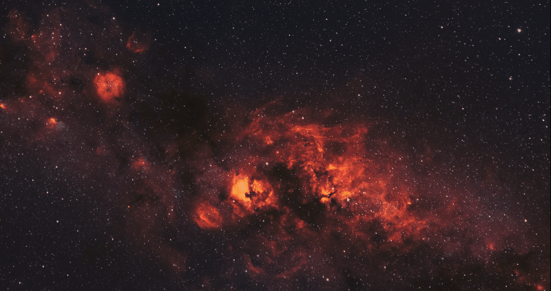

About¶
Companion program for the new Windows Terminal that enables Quake-style drop down and some additional features.

WTQ v1
This is the documentation for Windows Terminal Quake v1.
Click here to see the docs for the in-development v2.
Features¶
- Runs alongside the new Windows Terminal
- Toggle using CTRL+~ or CTRL+Q (configurable, see hotkeys)
- Shows up on the screen where the mouse is (eg. multi-monitor and multi-workspace)
- Transparency
- Configurable as fullscreen, or partial screen
Getting Started¶
Direct Download¶
Get the latest compiled binary from GitHub releases.
See all available binaries, also from GitHub releases.
Get From Scoop¶
Download from scoop:
scoop install https://raw.githubusercontent.com/flyingpie/windows-terminal-quake/master/scoop/windows-terminal-quake.jsonGet From WinGet¶
Install WinGet:
winget install windows-terminal-quake --version 1.6Build (Cake)¶
- Clone the repository.
git clone https://github.com/flyingpie/windows-terminal-quake.git- Run build.ps1.
cd windows-terminal-quake
./build.ps1- Open one of the executables in
artifacts.
cd .\artifacts\Artifact.SingleExe
.\windows-terminal-quake.exeBuild (Visual Studio)¶
- Clone the repository.
git clone https://github.com/flyingpie/windows-terminal-quake.git-
Open windows-terminal-quake.sln.
-
Run build.
Settings¶
Since v0.4, the app supports a JSON settings file. The file can be placed at either (in order):
- File called "windows-terminal-quake.json", next to the app .exe
- "C:\Users\(username)\windows-terminal-quake.json"
WTQ also supports the extensions .jsonc and .json5, which can be useful for automatic syntax highlighting support in editors.
Changing the file automatically results in the app reloading the settings.
Settings feature Suggested by Mike F.
Always On Top¶
Whether to keep the terminal window always on top (requires restart).
Defaults to false.
{
"AlwaysOnTop": true
}Suggested by Adam
Command Line Parameters¶
Windows Terminal supports a set of command line parameters, for example to start with multiple tabs or panes.
Any arguments passed to windows-terminal-quake are passed to Windows Terminal, eg:
windows-terminal-quake.exe split-paneSuggested by NikhilSaini38.
Disable When Active App Is In Fullscreen¶
Disable toggle hotkeys when the currently focused application is on the primary monitor and is in fullscreen.
Useful for eg. when playing a game, to prevent being thrown back to the desktop when touching a hotkey.
Defaults to false.
{
"DisableWhenActiveAppIsInFullscreen": false
}Suggested and implemented by einwickler
Hide On Focus Lost¶
When clicking or alt-tabbing away to another app, the terminal will automatically (and instantly) hide.
Defaults to true.
{
"HideOnFocusLost": true
}Suggested by Douglas Lara
Hotkeys¶
Multiple hot keys are supported, with an optional modifier.
{
// The keys that can be used to toggle the terminal
"Hotkeys": [
// Tilde, without modifiers
{
"Key": "OemTilde"
},
// Ctrl + Q
{
"Modifiers": "Control",
"Key": "Q"
},
// Multiple modifiers
{
"Modifiers": "Control,Shift",
"Key": "W"
}
]
}F12 As a Hotkey¶
When using "F12" as a hotkey, it may be necessary to disable the key as a shortcut for the system-wide debugger first.
Since F12 is the default for the debugger, it won't respond when used in another app, such as Windows Terminal Quake, or ConEmu.
This can be done by changing the registry key at:
Computer\HKEY_LOCAL_MACHINE\SOFTWARE\Microsoft\Windows NT\CurrentVersion\AeDebug\UserDebuggerHotKeyThis key defaults to 0, which means F12.
As pointed out by the ConEmu docs, it can for example be changed to the "Pause"-key (value 13).
A reboot may also be required, after which F12 can be used as a hotkey for toggling.
Thanks to Luca for pointing this out on GitHub.
See also:
Notifications¶
Whether to show notifications when the app starts and when the settings are reloaded.
Defaults to true.
{
"Notifications": true
}Opacity¶
The terminal window can be made transparent through the Opacity-setting.
Note that this controls the transparency of the entire window, including the title bar.
From 0 (invisible) to 100 (opaque).
{
"Opacity": 80
}
Suggested by ukWaqas
Prefer Monitor¶
What monitor to preferrably drop the terminal.
Can be:
- WithCursor
- Primary
- AtIndex
If PreferMonitor is set to AtIndex, the MonitorIndex-setting determines what monitor to choose.
Zero based, eg. 0, 1, etc.
Defaults to WithCursor.
{
"PreferMonitor": "AtIndex",
"MonitorIndex": 1
}Suggested by Christian Käser
Size & Align¶
Horizontal Align¶
When HorizontalScreenCoverage is below 100, this setting determines where the terminal is place horizontally.
Possible values:
- Left
- Center (default)
- Right
{
"HorizontalAlign": "Center"
}Left

Center

Right

Suggested by Rafael Pereira
Horizontal Screen Coverage¶
How much horizontal space the terminal should use. When this is below 100, the terminal is centered (can be changed using the Horizontal Align) setting.
This can also be above 100, which can be useful to compensate for the window not always taking a 100% of the screen width, due to the terminal being bound to column widths (eg. try 100.5 or 101).
{
"HorizontalScreenCoverage": 80
}
Suggested by baslas
Vertical Offset¶
How much room to leave between the top of the terminal and the top of the screen.
{
// How much room to leave between the top of the terminal and the top of the screen
"VerticalOffset": 50
}Vertical Screen Coverage¶
The vertical space that is taken up by the terminal window can be configured through "VerticalScreenCoverage".
{
// How far the terminal should come down, in percentage (eg. 50 = half way, 100 = full screen)
"VerticalScreenCoverage": 60
}
Suggested by ukWaqas

Suggested by Neil Santos
Maximize After Toggle¶
Whether to maximize the terminal after it has toggled into view.
Note that this only applies when both HorizontalScreenCoverage and VerticalScreenCoverage are at least 100.
This is to fix the issue where the terminal columns don't line up with the width and height of the screen.
Since the terminal sizes in incremental values of 1 column, 100% horizontal coverage can actually mean slightly under the full width of the screen.
Defaults to true.
{
"MaximizeAfterToggle": true
}Start Hidden¶
Whether to hide the terminal window immediately after app start.
Defaults to false.
{
"StartHidden": true
}Suggested by Christian Käser
Suppress Hotkey for Processes¶
The processes that suppress the hotkey bind.
Useful for cases where, when a specific program has focus, toggling of the terminal should be suspended.
Defaults to no processes.
{
"SuppressHotkeyForProcesses": [ "code.exe" ]
}Suggested and implemented by Alex
Taskbar Icon Visibility¶
When to show the terminal window icon on the taskbar.
"AlwaysHidden", "AlwaysVisible" or "WhenTerminalVisible".
Defaults to no "AlwaysHidden".
{
"TaskbarIconVisibility": "AlwaysHidden"
}Suggested by metya
Toggle Animation¶
Toggle Animation Type¶
Which animation type is used during toggle up/down.
Supported values:
- Linear
- EaseInBack
- EaseInCubic
- EaseInOutSine
- EaseInQuart
- EaseOutBack
- EaseOutCubic
- EaseOutQuart
See easings.net for examples of the easings.
Defaults to EaseOutQuart.
{
"ToggleAnimationType": "EaseOutQuart"
}Suggested and implemented by Tim Molderez
Toggle Duration¶
How long it should take for the terminal to come down or go back up. This is an estimate, since because of the way the toggling works, some slow downs can happen.
Setting this to 0 makes the toggle instant.
{
"ToggleDurationMs": 150
}Suggested by Mike F
Toggle Mode¶
How the terminal actually gets toggled on- and off the screen.
Supported values:
Resize
Resizes the terminal window vertically until it is either at full size, or shrunk out of the way. This should work on any setup, but can cause some jumping of the terminal characters, such as the cursor.
Move
Moves the entire window off-screen to the top, which prevents jumping of the terminal characters, since the size of the terminal is kept constant.
This doesn't work too great with vertically-stacked monitor setups, since the terminal might be pushed off to the monitor north of the active one.
Defaults to Resize.
{
"ToggleMode": "Resize"
}Suggested by Mark Johnson and Scott Hanselman
Toggle Animation Frame Time¶
How long each frame in the toggle animation takes in milliseconds. The lower this value, the smoother the animation, though values lower than 15 are not supported and will result in a toggle taking more than the configured.
Defaults to 25.
{
"ToggleAnimationFrameTimeMs": 25
}Suggested by Raphael Mobis Tacla
Windows Terminal Command¶
The command/file path to execute when the app starts and Windows Terminal is not yet running.
Useful for when the Windows Terminal is not in the PATH variable. In such cases, the full path to the wt.exe executable can be used instead.
Defaults to "wt.exe".
{
"WindowsTerminalCommand": "wt.exe"
}